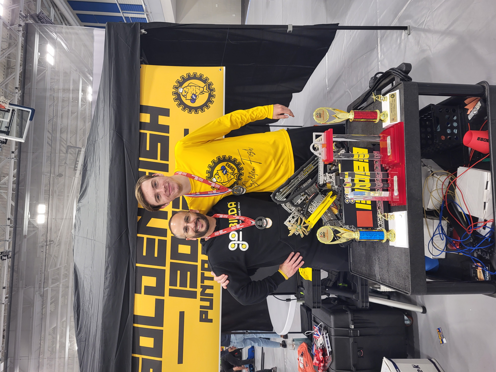
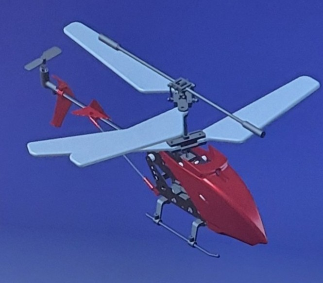
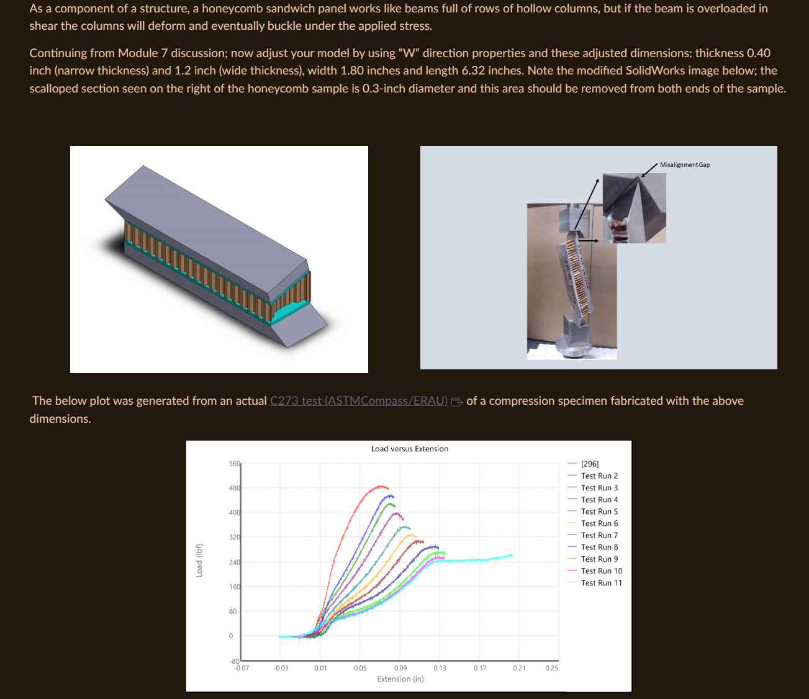
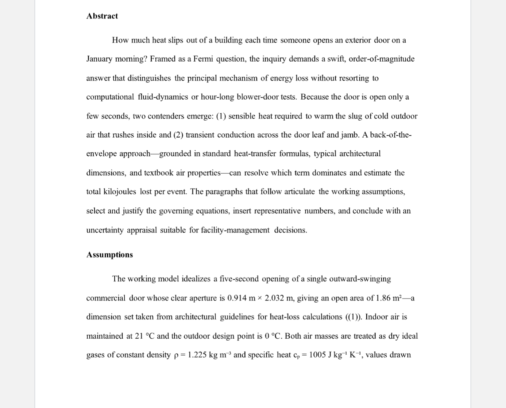
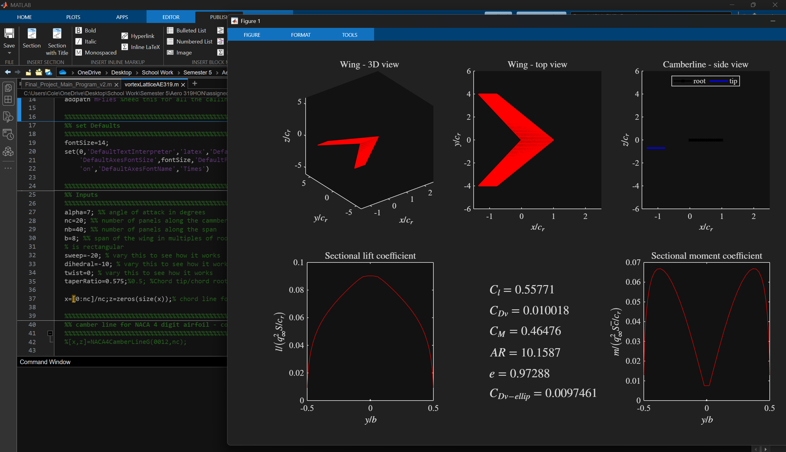

Cole Vanagas
My Foundation:
Hello there. I am a junior at Embry-Riddle Aeronautical University, Daytona Beach. I am studing to attain my Bachelor's Degree in Aerospace engineering with a focus in astronautics and propulsion. At Embry-Riddle, I am also a member of the honors program, which challenges my degree acquisition further. Growing up on a ranch, I had participated in activities very different to engineering in my youth, such as 4-H and youth baseball. However, I have years of experience in engineering and unshaken love for problem solving. I truely think that problem solving is any aspiring engineer's bread and butter and dreams of a better world to be the drive. My 8th grade science fair project on friction and magnetic breaking is likely the earliest example of this love coming to fruition.
In high school I had taken fundamental engineering for 3 years learning Autodesk Inventor and became a teaching assistant for the class my senior year. In that same year, for the second year in a row, my robotics team had made it to the finals in the First Tech Challenge (FTC) state competition. However this time, we had won the finals and achieved the opportunity to compete at the Worlds competition. We had advanced further placing high in our division at the world competition and first in the world for the autonomous portion of the competition. Even now in college, I continue to grow my skills in different mediums such as MATLAB, CATIA, STK, HTML, etc.
About Cole:
While I am normally not one to tell others about my achievements and boast my skills, I figure this portfolio is a necessary exception. I am starting my discussion with what drives me, as I feel that is one of the most important things in getting to know a person. Innovation and technology in general have always been major interests of mine, and even if I had no other aspirations in life, I would likely still want to be an engineer of some sort. I love old stories of fantastical and ambitious adventures filled with even more unique and intriguing people. So, it's no surprise that stories, such as those of Jules Verne, have inspired me to walk down a path of innovation and to expand the limits of humanity.
In a similar branch, aviation and space have always called to me. My uncle being a pilot and teaching me the very basics of aviation as a young child, surely influenced this. Perhaps, it is the pursuit of the unknown and the impossible that these branches of engineering offer that led me to become an aerospace engineer. However, I would like to believe that it is, as with most ambitions, a combination of both my umbringing and my knowledge learned from the world. Because of this, I have two main focuses I hope to pursure in my aerospace engineering career; Space exploration and Airships.
Since learning and research is my favorite pastime, I am always trying to learn as much as I can about these fields and creating feasible ideas of my own. Later down the line I hope to have attained enough experience in the field through my hardwork in an aerospace company of some sort and gain the opportunitiy to start my own company focusing on autonomous space mining and space manufacturing as a whole. Perhaps, one day I may even be blessed with the opportunitiy to start multiple companies based on my ideas on what could help the world and expand humanity's capabilities. However, before I get the chance to partake in those dreams of mine, I plan on working hard in a company that shares my passion for improving humanity and pushing the limits in aerospace.
3.5GPA, B.S. Aerospace Engineering
1stin Florida, FTC Robotics 2024
13th of 56in the FTC Worlds Golden Fish subdivision
3xDean's List (2024, 2025, 2026)
Work Experience:
May - Aug 2025
Dec 2025
Cape Coral, FL
Dec 2025
Cape Coral, FL
Entry-Level Mechanical Engineer, GM Automation
- I had designed and built filling and capping machines for liquid soap and natural-flavoring bottling lines. With a cross-functional team we used Autodesk Inventor and Vault to work together on different concepts for assembly and component manufacturing.
- Given these reviewed requirements, I had then helped machined various plates, rods, keys, guard rails, mounting brackets, ect. I had manufactured these objects to specification and within tolerance using hand drills, a drill press, saws, lathes, and sanders. I even learned how to tap holes and sharpen drill bits.
- Additonally I had helped test various nozzle sizes and pressure settings across several liquid viscosities to reach target fill rates. These nozzles would vary in size, screens, and plunger tips. The size would mainly effect the volumetric flow rate of the opening with the ambient pressure applied into the liquid holding tank above. The mesh screens were often added to minimize spillage and to produce a laminar flow by directing the streams all in the same direction. Finally using the collected data, we then turned the data into final nozzle and pressure specifications.
- Furthermore, during my time at GM Automation, I helped assemble and wire the labeling and shrink-wrap station of a military grade aircraft paint glass bottling line. I specifically was tasked to wiring up all the conveyor belt 3 phase 240V AC motors, their respective speed controllers (ESCs), and their PIDs. I then also individually packaged and shipped the entire pallet to the customer.
- I also assembled and mounted a complete filling and capping machine for commercial soap manufacturer Native, delivered on schedule and to specification helping mount gears, conveyor chains, paneling and so on.
- Lastly I personally help the company move their entire inventory to a new facility, in the process getting to learn how to drive and use a forklift. I personally tracked and counted every piece of inventory after this transition, allowing for other members to update the numbers in the system. While not enjoyable and extremely tedious, it definitly taught me how much thought goes into managing inventory and how important it is to stay on top of it..
May - Aug 2024
Punta Gorda, FL
Punta Gorda, FL
Busser/Host, Riviera Bar & Grill
- While I didn't have as technical of a job here, it certainly taught me the value of hard work. Working here I had filled various tasks, wherever I was needed at the time. Among my responsibilities as a busser I swept, cleared and wiped tables, mopped, cleaned bathrooms, took out trash, replaced beer kegs, refilled ice at the bars and fountain drink stations, shut down each night, cleaned AC vents, and cleaned up the bar areas.
- Furthermore, since I always needed more hours, I filled in for our hosts and expos as well. I had helped seat customers, deliver food and drinks, took reservations, kept waiters notified of their tables, and even helped write up the specials on the chalk boards.
- Last thing I think is of importance of my time at Riviera, was that I got partial training on how to be a waiter as well as how to be a proper barback. Regardless of its technicality though, this was an invaluable experience.
Projects:



FTC Robotics Senior Robot Build, Design Lead
Directed design decisions for a 2024 FTC competition robot and led the development of the intake subsystem as well as the paper airplane launcher. Our multifuctional robot scored reliably through every method the game rules allowed and made it all the way to the world competition.
1st in Florida · 13th in Worlds subdivision (Golden Fish)MATLAB Neutral-Buoyancy Program
Wrote a MATLAB program to size a semi-evacuated chamber that reaches neutral buoyancy in standard atmosphere. It aimed to balance buoyancy with respect to atmospheric elevation against the weight of the vessel. It also checked material hoop stress and elasticity of various materials.
MATLABCATIA Helicopter Modeling
Collaboratively, reverse-engineered and modeled an RC toy helicopter. I modeled the drivetrain, the gear reduction and calculated the torque/speed trade-off. I then then refined teammates' subsystem models and integrated everything into one coherent assembly.
CATIASolid Mechanics Stress on a wing, MATLAB Program
Given certain parameters and conditions pertaining to the honeycomb structure of the helicopter blade airfoil, I had designed and plotted a program that measured the shear stress and bending moment. This was done using a given data set and using matricies, was caluculated in MATLAB.
MATLAB


Rudamentry Rocket Design
In my introductory honors engineering class, I led a group of 3 in fulling designing a crude rocket tasked with launching a payload into LEO. We calculated sctructues, orbit trajectory, fuel, and weight requirements reitterating when one subsystem didn't meet the specs. Together we modeled the rocket in CATIA and wrote a report.
CATIAPhysics Thermal Flows Report
In a group of 4, my team and I calculated and wrote a report on how opening a door from an initially warm adiabatic room to a colder outside would change the temperature over time, given a set sized door and two distict constant ideal gases.
Report WritingWing Aerodynamics Model
Using a prebuilt model, confirmed and tested equations for forces and flows on differently shaped wings. Given a constant NACA airfoil, the angle of attack, span, sweep, dihedral, twist, and taper ratio were all varied with respect to a control and trends were established to recreate a wing to perform the most efficiently, as seen above.
MATLABSkills:
- CAD and engineering software:
- Autodesk Inventor- 7 years (Proficient); Fusion 360- 5 years (Intermediate); Autodesk Vault- 1.5 years (Intermediate); CATIA- 3 years (Intermediate); SolidWorks- 6 months (Beginner); Stk 13- 3 months (Beginner); Sketchup- 1 year (Beginner), Altium- < 1 month (Beginner)
- Manufacturing and shop:
- CNC milling- 1.5 years (Intermediate); Lathes- 1.5 years (Intermediate); Drill Press- +10 years (Proficient); Power Tools- +10 years (Proficient); Forklift Operation- 1 year (Intermediate); 3D Printing- 7 years (Proficient); Soldering- 6 years (Intermediate); Robotics- 6 years (Proficient).
- Programming:
- HTML- 1.5 years (Intermediate); CSS- 1 year (Beginner), Python- 6 months (Beginner), MATLAB- 2 years (Intermediate)
- Other:
- Technical Research and Report Writing- +8 years (Proficient); MS Office Suite- +10 years (Proficient)
- Certifications:
- GMetrix Autodesk Inventor, Spring 2021
Involvement and Education:
- Charlotte High School
- High School Deploma; Weighted GPA: 4.4 & Unweighted GPA: 3.8 (Fall 2020 - Spring 2024)
- Embry-Riddle Aeronautical University
- B.S. Aerospace Engineering, Honors Program, and a concentration in Astronautics & Propulsion.
Minors in Space Operations and Physics. CGPA: 3.5 Expected Graduation: May 2028. - ERPL
- Experimental Rocket Propulsion Lab, Electrical Team (Fall 2025 - present)
- RDL
- Rotating Detonation Lab, Structures & Electrical (Fall 2026 - present)
- AMRA
- Autonomous Maritime Robotics Association, Electrical & Software (Fall 2026 - present)
- Honors program
- Derbyshire Garden (Fall 2024 - present) & Pure Water Project (Fall 2024 - Spring 2025)
- Awards
- Dean's List 2024, 2025, 2026 ERAU Presidential and First Robotics Scholarship
Charlotte High Varsity Swim, Most Improved (2024)